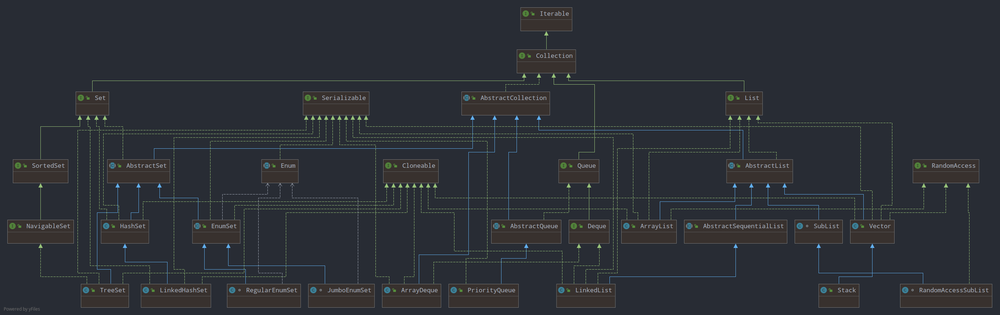
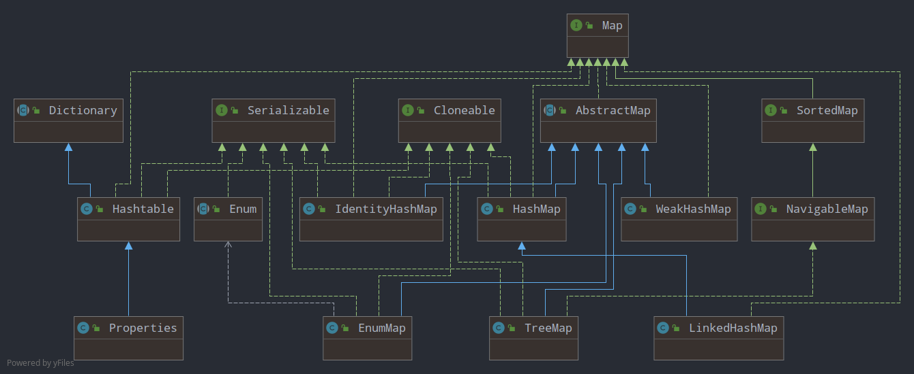

集合（Collection），顾名思义，是一组对象。当需要处理任何的一组对象的时候，我们不可避免地要与集合打交道。集合也存在于几乎所有编程语言中，因此 Java 也不例外，为了开发人员能够更高效地处理集合数据，Java 提供了一个集合框架 （Collections framework），它由一系列接口以及实现类组成，提供了不同类型的集合：List, Set, Map, Queue, Deque 等。
这些随时可用的集合类可以帮助解决许多非常常见的问题，帮助处理一组同构和异构对象。其中集合涉及的常见操作有添加（add），删除（delete），排序（sorting），搜索（searching）以及一些操作集合的较复杂的算法。Java 的集合框架为这些操作提供了透明化的支持。
1. Java 集合框架结构
为了更好地了解 Java 集合框架整体结构，我们首先需要对该框架所提供的核心接口有一定了解。因为框架中我们可能使用到的具体实现类（concrete classes）都是基于这些接口的。通过生成集合框架的类图，我们可以看到，该框架的主要核心接口是 Collection 和 Map。不同于数组，所有的集合均是根据实际元素数量来动态调整集合大小的。Collection 用于存储一组对象，而 Map 用于存储一组强关联的对象对，其中每一个对由 key 和 value 组成，即它是一种符号表（symbol table）。

图 1.1 Collection 接口层次结构图 1.1 展示了 Collection 接口的层次结构，该结构清晰地展示集合框架根接口 Collection 接口与其他接口（父接口和子接口）以及实现类的继承或实现关系。而 Interface 是 Java 类的模板，定义了具体实现类应该具备的行为。因此，我们可以通过了解各个接口来对该结构有初步的整体了解。
首先，Collection 接口继承了 Iterable 接口，使其可以作为 forEach 循环语句的执行对象。根据集合是否可包含重复对象，是否有序，Collection 由 List，Queue 和 Set 更具体化。其中，Set 不可以包含重复对象，且不保证元素返回按照预期任何顺序。List 包含一系列对象，不同于 Set，它能够包含重复对象且维持对象添加的顺序。Queue 是维持 FIFO（first-in-first-out, 先进先出）关系的一组对象，同样可以包含重复对象。
1.1 Collection 接口
Java 平台没有提供 Collection 接口的任何直接实现。该接口主要定义了操作集合中对象的基本方法，如告诉你集合中是否存在元素或存在多少元素的方法（isEmpty, size），检查给定元素是否存在于集合中的方法（contains），添加或删除一个元素的方法（add, remove），提供该集合元素的迭代器（iterator）（iterator）。
此外，Collection 还有作用于整体集合本身和集合之间的操作——containsAll，addAll，removeAll， retainAll，clear。toArray 方法主要是应对某些依赖数组类型作为输入的老旧 APIs。自 java 1.8 开始，该接口引入了 stream 和 parallelStream 方法来为 Stream 流提供支持，并结合 Lambda 和 Functional Interface 再添加了一个 removeIf 方法。
1.1.1 Iterator 接口
我们已经知道 Collection 继承了 Iterable 接口，需要实现 iterator 方法返回一个迭代遍历集合元素的迭代器对象。Java 集合框架中的枚举（Enumeration）操作由迭代器代替。迭代器允许我们在遍历集合元素时仍能删除集合中的元素。集合类中 Iterator 使用迭代器设计模式实现。
1.1.2 List 接口
列表（Lists）表示一组有序元素。通过 Lists，我们用元素在集合中的索引位置来访问该元素，取决于具体类是否实现 RandomAccess 接口，一般地，实现该接口则表示集合的底层实现使用数组，使用for-loop 时，利用 get() 要比用 iterator 方法更快。
相比于 Collection，它增加了访问元素的方法（get, indexOf, lastIndexOf），替换某个位置元素的 set 方法，还增加了 listIterator 和 subList 方法，此外，自 java 1.8 起，又结合 Lambda 和函数式接口，添加了 replaceAll，可以将集合中的每一个元素替换成应用某一一元运算之后的结果，如 list.replaceAll(x -> x++); 等。
我们常用的 List 接口具体实现类有——ArrayList, CopyOnWriteArrayList, LinkedList, Vector, Stack。
1.1.3 ListIterator 接口
ListIterator 接口继承了 Iterator 接口，不同的是，它允许开发人员以任一方向（向前或向后）来遍历列表中的元素，同样支持在遍历列表时对列表进行修改，并支持获取下一个待访问元素的索引。相比于 Iterator 接口，它增加了 hasPrevious 和 previous 方法来判断并获取前一个元素。
需要提出的是，在 Java 集合框架中，该接口主要由 List 接口继承。
1.1.4 Set 接口
Sets 表示一组不重复的对象。它无法保证返回元素按照任何预期顺序，但也有一些 Set 的实现以自然顺序存储元素并维持该顺序。Set 接口不支持随机访问，因此我需要通过迭代器或 forEach 方法来遍历集合中的元素。
常用的 Set 接口具体实现类有——HashSet, TreeSet, EnumSet, LinkedHashSet, ConcurrentSkipListSet, CopyOnWriteArraySet。
1.1.5 SortedSet 和 NavigatableSet 接口
从图1.1 的层次结构图可以看出，这些接口是为 Set 添加扩展。SortedSet 保证了 Set 中的元素是已排序的，而 NavigatablSet 接口确保了我们可以在已排序的 Set 中进行导航，提供可以检索比给定元素值大的下一个或上一个元素。当前主要是 TreeSet 实现了这两个接口。
1.1.6 Queue 接口
Queue 表示一种经典的数据结构——队列。除了拥有基本的集合操作以外，Queue 增加了队列的一些专属操作，进队、出队等。队列中的元素通常但不一定是 FIFO 的。PriorityQueue 是一个例外，它通过维持一个堆来实现的，因此，它存放元素的顺序可能是一个大顶堆或者小顶堆的方式。
通常情况下，队列不支持阻塞的插入和检索操作。需要使用相应实现 BlockingQueue 接口的阻塞队列实现类。
常用的 Queue 接口具体实现类有——LinkedList, ArrayDeque, PriorityQueue, ArrayBlockingQueue, ConcurrentLinkedDeque, ConcurrentLinkedQueue, DelayQueue, LinkedBlockingDeque, LinkedBlockingQueue, LinkedTransferQueue, PriorityBlockingQueue, SynchronousQueue。
1.1.7 Deque 接口
Deque 是一种支持在两端插入和移除元素的双端队列（发音为 deck）。它即可以被当作一个 Queue 来使用（FIFO, first-in-first-out），也可以当作一个 Stack 使用（LIFO, last-in-first-out）。
该接口代替 Stack 作为一个栈来使用，因为 Stack 继承于 Vector 类，它的方法均使用 synchronized 关键字修饰进行同步，不考虑多线程情况下，使用它性能不佳。
实现 Deque 接口的常用类——ArrayDeque, ConcurrentLinkedDeque, LinkedBlockingDeque 和 LinkedList。
1.2 Map 接口
Map 接口定义用于存储键-值对（key-value pairs）数据对象的集合（其中键要是不可变的，immutable）。Map 接口的层次结构见图 1.2。一个 Map 不能包含重复的 key，每一个 key 唯一定对应一个 value。一个 Map 的基本操作有 put, get, containsKey, containsValue, size 以及 isEmtpy。
Map 实际上提供了三种集合视图，我们可以把一个 Map 看作是一个由键组成的集合、一个由值组成的集合以及一个由键-值对映射组成的集合。在 Map 的具体实现类中，有的会维持元素的顺序，如 TreeMap，而有的则不会，如 HashMap。
Map 接口常用的实现类有——HashMap, EnumMap, HashTable, IdentityHashMap, LinkedHashMap, Properties, TreeMap, WeakHashMap, ConcurrentHashMap, ConcurrentSkipListMap。

图 1.2 Map 接口层次结构1.2.1 SortedMap 和 NavigatableMap 接口
与之前的 SortedSet 和 NavigatableSet 接口类似，它们为 Map 接口增加了类似的行为。主要是 LinkedHashMap 实现了这两个接口。之所以，Set 和 Map 的实现有许多类似的地方，是因为 Set 具体类的实现使用 Map 的具体类作为支持。
2. 小节
本文主要简单介绍了 Java 集合框架的结构，了解其中接口和具体实现类的关系。通过这些了解，我们可以对 Java 的集合框架有了一个初步的了解。接下来，我们还进一步地去了解常用具体实现类的一些细节，以及我们在开发时遇到实际问题时，应该优先使用那些具体类的问题。此外，还需要对 java.util 包下提供的两个工具类 Collections 和 Arrays 进行了解，它们分别提供了操作集合和数组的一些非常有用的方法，例如 sort, shuffle, reverse search, min, max 等。此外，Collections 提供了许多操纵集合的方法，能够对给定集合进行封装，比如将给定集合转换成同步集合、不可修改集合等。